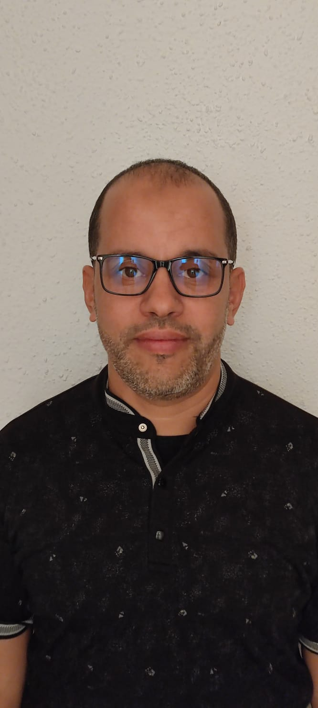

Université Mohammed PremierFaculté des Sciences d’Oujda
Pr. Aïssa Sghir
Enseignant-Chercheur

Ressources pédagogiques
Toutes les ressourcesAxes de recherche
Voir toutes les publicationsProcessus gaussiens & temps locaux
Mouvements browniens fractionnaires, régularité et lois de probabilité.
Calcul stochastique & méthodes numériques
Calcul de Malliavin et équations différentielles stochastiques.
Modélisation stochastique en santé
Dynamique des épidémies, vaccination et dépistage groupé.